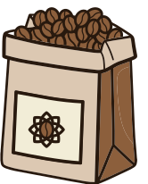
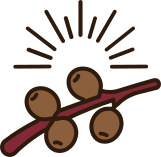

Micro-Batch Roasts & Single-Origin Beans
Hand-roasted in small, intentional micro-batches since 2014, our single-origin coffees and signature blends are crafted to bring the warmth of Metta straight to your morning routine.
-

Community Blend
Sumatran, Brazilian, Colombian & Mexican
- Sweetness
- Acidity
Medium Roast
Buy beans -
Community Blend
Sumatran, Brazilian, Colombian & Mexican
- Sweetness
- Acidity
Medium Roast
Buy beans -
Community Blend
Sumatran, Brazilian, Colombian & Mexican
- Sweetness
- Acidity
Medium Roast
Buy beans -
Community Blend
Sumatran, Brazilian, Colombian & Mexican
- Sweetness
- Acidity
Medium Roast
Buy beans
Ordering our blends
Small-batch roasted in Anoka to ensure peak freshness. Discover
our carefully sourced single-origins and comforting house blends, designed for every palate and brewing method.
-
16oz Bags
These are available in
store as whole or ground. -
3lb - 5lb
Bring your own container
and please call ahead. -

Over 5lb
Please email us at
contact@mettacoffee.com
What kind of beans are in our blends?
Dark Roast
Sumatran: 100% Sumatran.

Where do we get our beans?
We roast all of our coffee beans in Coon Rapids, MN in hand-roasted micro-batches. We purchase beans from Cafe Imports who make it their mission to bring the highest-quality green coffees in the world by sourcing, developing, and innovating at origin, while empowering farmers with price, traceability, and long-term partnerships. We fully believe that they incorporate the idea of Metta and what we want to put into the world.
Learn About UsWhat kind of coffee beans do we use?
-

Brazilian
From various farms in Brazil, this coffee creates a clean and sweet flavor with a citric lemon acidity and a salted peanut nuttiness.